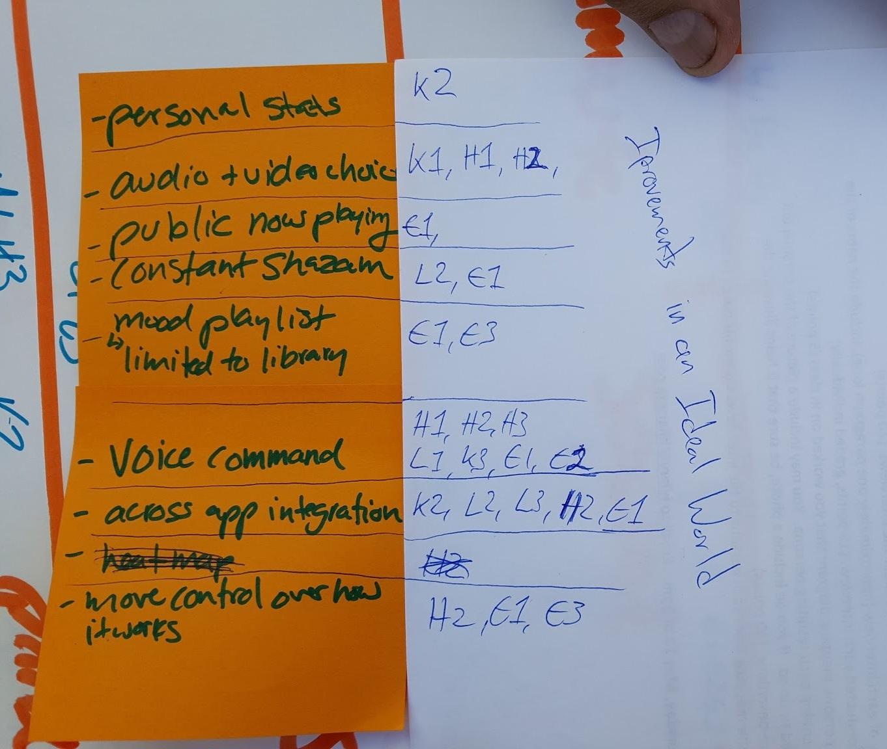
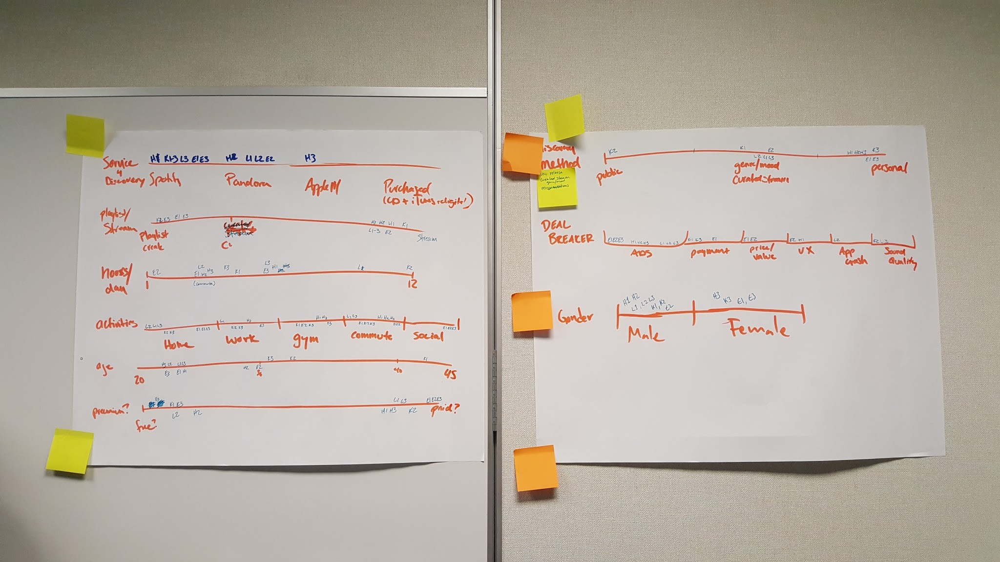
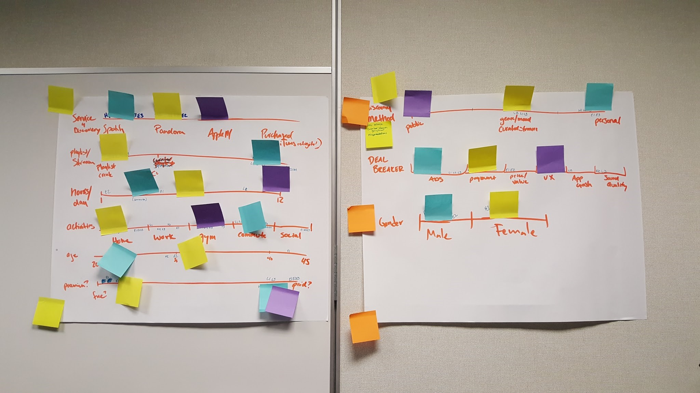

UX Designer working alongside a talented team of designers at California State University, Fullerton. Contributed to interview planning and analysis. Helped develop three user personas
Develop a service to facilitate new music discovery for "affinity listeners" - defined as those who actively seek out music that is similar to what they already listen to.
To observe how people interact with their preferred apps to discover new music online.
Twelve participants will be selected from the researchers’ networks who care about discovering new music. These participants will be interviewed for 20-30 minutes and asked a series of questions. They will be asked to perform a brief music discovery task as well. Each interviewer will provide a half page summary of each interview. If the participant agrees, each interview will be audio recorded by the interviewer.
The team will debrief from the interviews and create an affinity map of findings. From this diagram and the research team’s inferences, three personas will be assembled based on common themes among the responses.
We used contextual research to interview and gather insights from 12 users for this project. We wanted to make sure that these personas accurately depict the users' interests and the context in which they use music apps.
Interviewee responses were quite similar, so we opted to utilize an affinity diagram to accurately represent common themes.



Streaming Sally is an Event Planner in her early 20s. She likes to listen to music about 2-3 hours per day, most of which occurs while commuting between home and work.
She primarily uses a paid subscription to Spotify because she despises ads and the subscription allows her to listen to the music that she wants to at any time. The paid subscription also allows her to save Spotify music to her phone for offline playback, which works great since she does not want to deplete her mobile data during her long commutes.
She primarily discovers new music through playlists or genre radio stations on Spotify, and enjoys the suggestions given to her based off her eclectic music tastes. She enjoys matching the music she’s listening to with her mood at any given moment.
Good Spotify suggestions makes her listening experience more enjoyable and she likes that her music service “knows” her tastes.
Likewise, she much prefers when the suggestions have little or no repetition. She wishes that she could use voice command to easily start playing music.
Steady Eddie is a young professional in his late twenties. He is generally an easy going, laid back person that likes consistency and predictability.
Eddie primarily uses Pandora to listen to and discover new music, although he much prefers to listen to familiar music he knows and likes. He likes decades channels and very specific genre channels.
If he’s listening to music, you would most likely find him in his car, commuting to or from work. He prefers to have music on in the background while doing something rather than actively listening to it.
Eddie wants an easy way to listen to music he already likes; he has to be gently introduced to new music and doesn’t like getting his boat rocked too much.
Jeff is 33 years old and lives in Los Angeles, CA. He listens to music 70 hours or more per week - mostly electronic dance music (EDM). Jeff considers himself a “power” music listener and estimates that 50% of the music he listens to is new. Jeff prefers listening to his own playlists over curated streams, and builds playlists for every part of his day.
He primarily uses his computer at home to build his playlists, but will also create playlists on his phone while on the go. His playlists are always evolving based on the latest releases, which he finds using Spotify’s various music discovery features, particularly those that update weekly.
Because he predominantly listens to EDM, he needs to stay on the cutting edge of all new music in this fast-paced genre. Jeff is not concerned about subscription fees. If it gives him more control and and access to the latest music releases, he’ll pay for it.
His ideal music app would include stats on what he listened to that week, give him the ability to customize the user interface, and access all to all the metadata a physical CD would have (he is nostalgic for the days of album artwork and CD cover booklets).
For Jeff, user experience, sound quality, and minimal buffering are important considerations when it comes to selecting a music app.